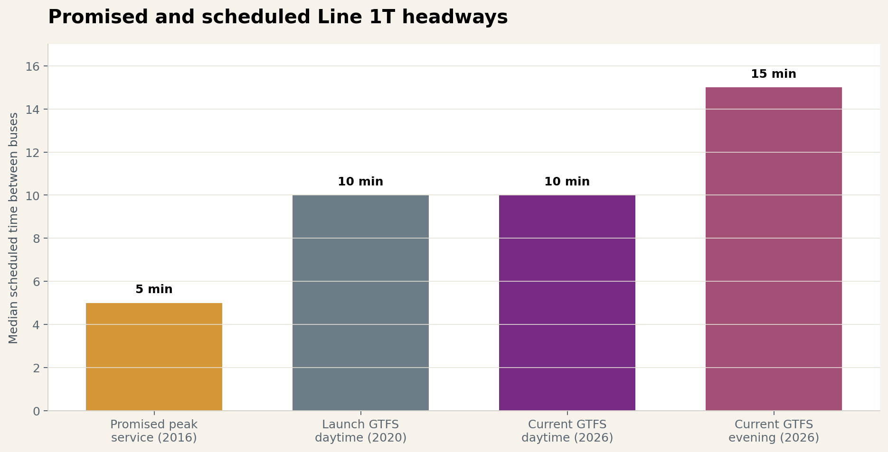
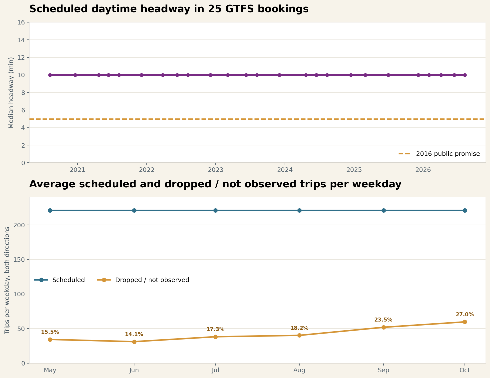
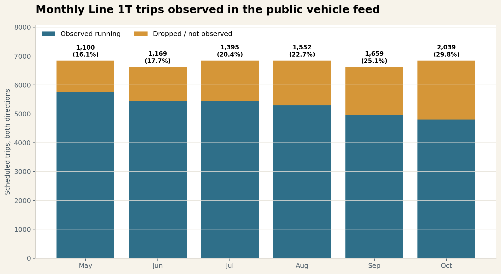
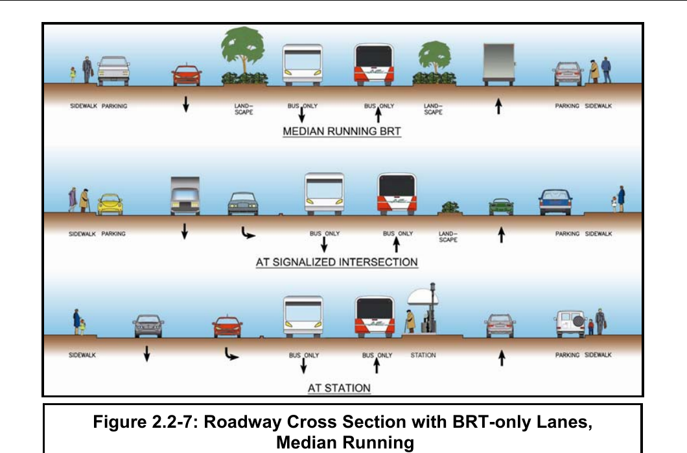
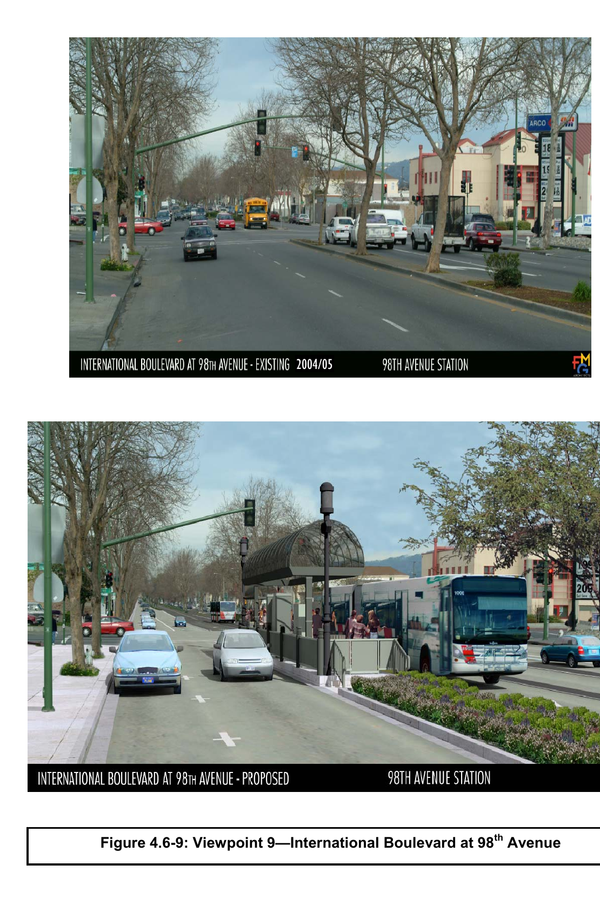
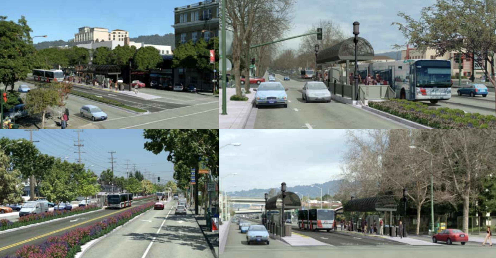

This document assembles the public record of Tempo’s stated service and street-design commitments, the schedule that AC Transit published at opening, service observed through the public vehicle feed, and the response to fatal crashes on International Boulevard. It does not determine legal causation or responsibility; it identifies the chronology, the discrepancies in the available record, and the records that would be needed for a fuller review.
The material supports four principal findings. Five-minute peak service remained part of the project description during final-design approval, but the opening schedule provided ten-minute daytime service. That schedule has not materially deteriorated since 2020. The larger service deficiency is the growing share of scheduled trips that cannot be identified as running in the public feed. Separately, safety features shown during environmental review were not fully built, and the corridor-wide quick-build response was completed more than four years after Tempo opened.
5 minpeak headway described during final-design approval in 2016
10 mindaytime headway in the 2020 launch and current GTFS schedules
2,039October 2026 trips classified Dropped / not observed
Oct. 2024completion of the International Boulevard quick build
Service commitment and opening schedule
The five-minute service description was not limited to an early concept for the longer Berkeley–Oakland–San Leandro proposal. On April 25, 2016, after the project had been shortened to 9.5 miles between Uptown Oakland and San Leandro BART, a City of Oakland final-design staff report stated that the project would feature five-minute headways and later described service frequency increasing to five minutes. A contemporaneous California Senate committee analysis also described five-minute peak service.
AC Transit’s launch GTFS, booking 2008FA beginning August 9, 2020, shows a different operating plan. On the standard weekday, Line 1T scheduled 208 trips in both directions, with ten-minute headways from 6 a.m. to 7 p.m. and fifteen-minute headways from 7 p.m. to midnight. The current booking, 2608FA, retains those daytime and evening headways.

GTFS history and observed operations
The GTFS review applies the same method to every official booking from 2008FA through 2608FA. For each booking, the analysis identifies the most common weekday service pattern after calendar exceptions and measures first-stop departures separately by direction. The standard weekday trip count increased from 208 at launch to 221 in the current booking, a 6.3 percent increase, while Saturday and Sunday now each schedule 220 trips.
Schedule quantity and delivered service are separate questions. Beginning in May 2026, the tracker can compare scheduled trips with trips that appear in AC Transit’s public vehicle-position feed using a valid trip identifier. One qualifying vehicle report is sufficient to classify a trip as Observed running; the scheduled remainder is classified Dropped / not observed.

| Standard service | Scheduled trips both directions | Daytime median 6 a.m.–7 p.m. | Evening median 7 p.m.–midnight |
|---|---|---|---|
| Launch weekday Booking 2008FA | 208 | 10 min | 15 min |
| Current weekday Booking 2608FA | 221 | 10 min | 15 min |
| Current Saturday | 220 | 10 min | 15 min |
| Current Sunday | 220 | 10 min | 15 min |
On weekdays, the average scheduled total remained approximately 221 trips per day from May through October 2026. The average Dropped / not observed count increased from 34.3 trips per weekday in May to 59.7 in October, and its share of the weekday schedule increased from 15.5 percent to 27.0 percent. Across all day types during the six complete months, 8,914 of 40,607 scheduled trips, or 22.0 percent, were not observed.

October 2026 had 6,842 scheduled trips, of which 4,803 were observed and 2,039 were not. The weakest period was the weekend evening, when 174 of 360 scheduled trips were observed, an observed share of 48.3 percent. AC Transit’s June 2026 route table reported 85.3 percent Service Operated for Line 1T, compared with 82.3 percent in this tracker for the same month.
The public data cannot establish that every unobserved trip was cancelled. A bus may operate without a usable trip identifier, or vehicle-position data may fail while it is in service. The classification therefore identifies an unresolved operating or information-system failure, not a definitive cancellation. Dispatch logs, operator assignments, pullout records, and real-time system error logs are required to determine the disposition of each trip.
Street design and safety response chronology
The available record shows a change between the protective elements presented during project review and the corridor that opened in 2020. It also shows a sequence of fatal crashes, community demands, project development, and later mitigation. The chronology does not establish that the BRT design caused any individual crash, but it is relevant to when safety concerns became apparent and how long the agencies took to implement additional treatments.
The 2007 draft environmental report showed a curb-separated transitway
The complete May 2007 Draft Environmental Impact Statement/Environmental Impact Report, prepared by the Federal Transit Administration and AC Transit, provides a direct record of the design then under environmental review. Summary page S-4 states that the transitways would be separated from mixed-flow traffic lanes by a mountable curb and identifies International Boulevard from 1st Avenue to the Oakland–San Leandro city limit as one of the principal streets where transit-only lanes were proposed.
Two retained copies of the document are available: the public Internet Archive copy and an author-held Gmail attachment, which is private and requires access to the relevant Google account. The Gmail attachment and public archive copy each contain 539 pages and are 24,240,689 bytes.
Chapter 2 makes the East Oakland application explicit. Printed page 2-43 states that the segment from 14th Avenue to the city limit would use a two-way median transitway under every build alternative, that the configuration would be similar to Figure 2.2-7, and that landscaping would run alongside the transitway between approximately 38th Avenue and the city limit. Figure 4.6-9 then shows the proposed 98th Avenue station with a continuous raised, landscaped separator between the BRT lane and general traffic.


The project renderings circulated during the environmental-review period also show the physical character of the proposed separation. They depict continuous raised, concrete-edged landscaped strips between the transitway and adjoining general-traffic lanes, rather than a painted line or flexible plastic posts. The upper-right panel in the composite below reproduces Figure 4.6-9 at 98th Avenue.

| Date | Documented event | Source |
|---|---|---|
| May 2007 | The draft EIS/EIR described transitways separated from mixed-flow lanes by a mountable curb. It applied the Figure 2.2-7 median configuration to International Boulevard from 14th Avenue to the city line under every build alternative and showed raised landscaped separation at 98th Avenue. | Draft EIS/EIR |
| 2012 outreach | Public-outreach material described raised, curb-separated islands intended to create protected pedestrian crossings. | Reproduced outreach record |
| April 2016 | Oakland approved final-design work for the shortened project. The staff report continued to describe five-minute headways together with dedicated lanes, stations, signal priority, and pedestrian improvements. | Oakland staff report |
| August 2020 | Tempo opened with a ten-minute daytime schedule. The corridor included center stations and dedicated lanes but did not include continuous physical separation between the bus lane and general traffic. | AC Transit GTFS archive; design review |
| June 2022 | Traffic Violence Rapid Response held its first International Boulevard vigil after a driver killed 73-year-old Emelia Martinez. The organization states that AC Transit was then considering signs and pavement stencils, while organizers requested concrete lane separators and speed cushions. | TVRR campaign chronology |
| Fall–December 2022 | TVRR submitted a report on recurring illegal turns and speeding to AC Transit and OakDOT. According to its chronology, OakDOT then obtained approximately $1.5 million to expand the response beyond signs and paint at a limited number of intersections. | TVRR campaign chronology |
| Spring–summer 2023 | AC Transit records project development as complete in spring 2023 and treatment identification as complete that summer. TVRR reports that Oakland announced a corridor-wide plastic-post design in June, by which time it had counted nine deaths on International Boulevard since January 2022. | AC Transit project schedule; TVRR campaign chronology |
| November 2023 | AC Transit and OakDOT held a virtual public meeting on the quick-build project. AC Transit describes the treatments as vertical posts, markings, signs, possible raised curbs, and a speed-cushion pilot. | AC Transit quick-build page |
| April–October 2024 | Oakland announced construction and a limited speed-cushion trial in April. AC Transit reports that construction was complete by October, with vertical delineator posts, pavement markings, and 25 mph signs installed between 14th and 107th Avenues. | April announcement; completion record |
| Current public record | AC Transit states that early data after Tempo’s launch revealed serious safety concerns and reports an 83 percent reduction in private-vehicle bus-lane intrusions after the quick build. The project page remains in an evaluation stage. | AC Transit summary; project status |
Public evidence concerning fatalities and vehicle speeds
TVRR’s 2020–2022 speed study analyzed approximately 7.2 million observations along the Tempo alignment. It reported increased 85th-percentile speeds on 97.2 percent of the corridor and a distance-weighted average speed increase of 20.5 percent. The same report states that International Boulevard had no traffic fatalities in 2018 or 2019 and accounted for more than one-quarter of Oakland’s traffic fatalities by 2022. TVRR’s later chronology counts nine deaths between January 2022 and June 2023.
Those results require qualification. The comparison uses January–February 2020 and May–June 2022 rather than matched months, and the underlying source shifted from primarily location-based mobile data in 2020 to primarily connected-vehicle data in 2022. The report acknowledges that connected-vehicle data can produce somewhat higher estimated speeds. The scale and distribution of the reported increase warrant investigation, but the study alone does not establish legal causation.
AC Transit now states that early data following the August 2020 launch revealed serious safety concerns. Its published response emphasizes the 83 percent reduction in private-vehicle intrusion after installation of the quick build. The pages reviewed for this report do not publish corresponding before-and-after results for vehicle speed, collisions, serious injuries, fatalities, or the speed-cushion trial, and they do not state whether permanent concrete separation remains under consideration.
Deficiencies and unresolved issues in the public record
Items for further review
The public record does not reconcile the principal changes or outcomes
1
Five-minute service was not carried into the opening plan
The available approval materials describe five-minute peak service, while the first GTFS schedules ten-minute daytime service. The reviewed materials do not identify the decision date, approving authority, operating-cost analysis, or public explanation for that change.
2
The final street design did not include the separation shown during environmental review
The 2007 draft EIS/EIR described a mountable curb, applied a median-running cross-section to East Oakland under every build alternative, and depicted raised landscaped separation at 98th Avenue. The operating corridor opened without continuous physical separation. A complete review requires comparison with the final EIS/EIR, design-change records, safety analyses, approvals, and as-built plans.
3
The corridor-wide mitigation followed several years after opening
Tempo opened in August 2020, community organizing began by June 2022, project development was completed in 2023, and construction was completed in October 2024. The reviewed record does not provide a consolidated account of interim risk controls, agency knowledge, decision milestones, or the reasons for that schedule.
4
The published safety evaluation is incomplete
The reported decline in bus-lane intrusions is relevant, but it does not resolve whether speeds, crashes, injuries, and deaths declined or whether the speed-cushion pilot should be expanded. The underlying evaluation data, methods, findings, and permanent-treatment decision should be published.
5
Scheduled and operated service are not publicly reconciled trip by trip
The real-time feed shows a substantial and worsening gap, but it cannot distinguish cancelled service from data failure. A review requires dispatch and pullout records, operator assignments, cancellation codes, real-time feed error logs, and a reconciled account of every scheduled 1T trip.
The present record documents a project that opened with less frequent service and less physical separation than described during approval, followed by a fatality crisis and a later quick-build response. It also shows that the published schedule has remained stable while observed delivery has deteriorated. Determining responsibility and adequacy requires the internal decision, safety, and operating records identified above.